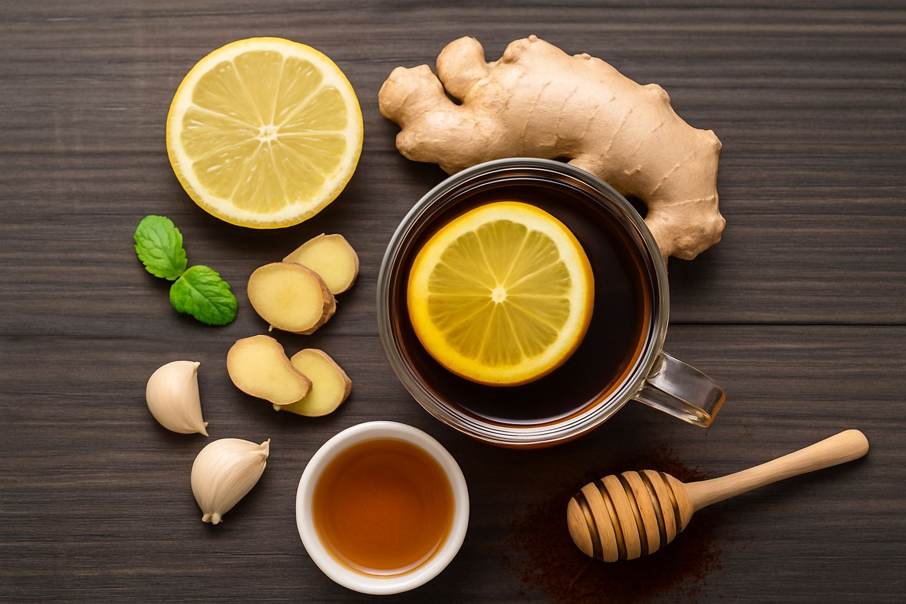

Você está prestes a descobrir a fórmula que vai turbinar sua performance naturalmente.

Modo de usar:
1. Corte o alho e o gengibre.
2. Misture com o suco do limão.
3. Adicione o café e o mel.
4. Mexa bem até formar uma mistura homogênea.
✅ Tome 1 vez ao dia, sempre de manhã ou sempre antes de ir dormir.
Faça isso durante 3 semanas, seguidos para melhores resultados.